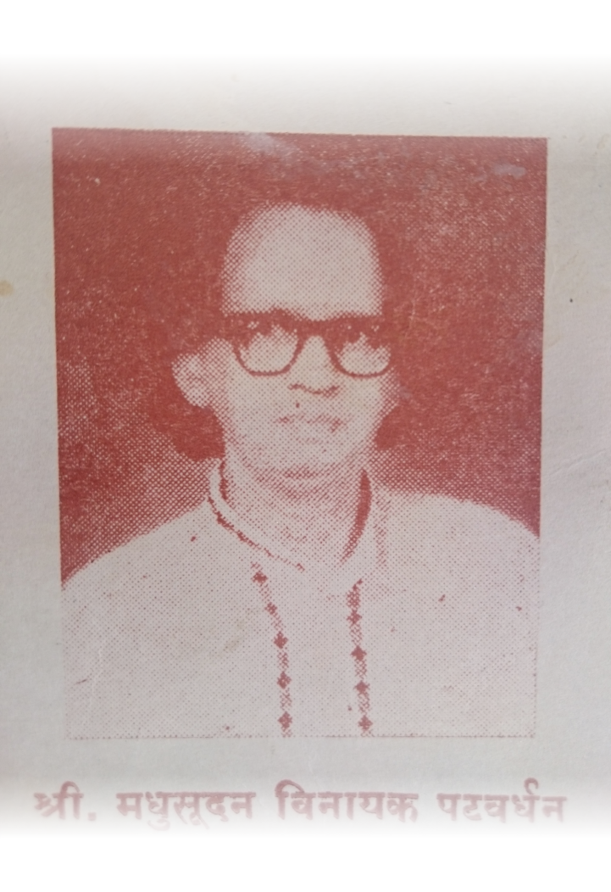
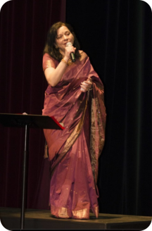
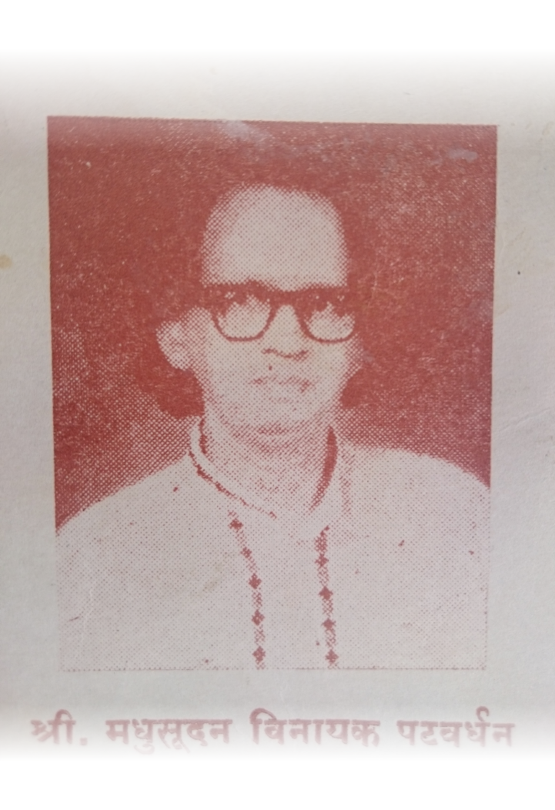
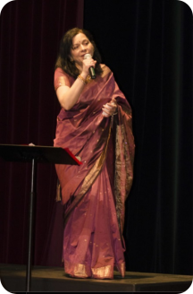

Founder and Teacher: Mrinalini Arkatkar
Mrinalini Arkatkar, founder and teacher of Gamak Academy, is a disciple of Dr. M.V. Patwardhan, son of late Pundit Vinayakbua Patwardhan of Gwalior Gharana. She pursued her post graduation in Indian classical music from S.N.D.T. University of Pune and has been teaching North Indian Classical Music for the last 25 years. She has a passion for teaching music.
She is a professional versatile singer with an entrancing, melodious voice. Her Bhajan, Abhang singing filled with a “bhakti raasa” always brings tears to the audience. Whether it is a very emotional song or it is an up-beat romantic, fun song, Mrinalini makes sure to bring the soul of each song to life. This is the same philosophy she follows when she teaches her students as they learn classical or light music.
Mrinalini believes in helping the community and has performed many charity shows to raise funds for various causes, with all proceeds going to the cause and none to herself. She has served as a judge for several singing and art competitions too.
Links to YouTube videos for some of her performances:
Bhairavi, Sharade Ghe Tasala Avataar, Her composition
Adinaatha Guru Haa, Her composition
BMM 2017, Michigan, Curtain Opening presentation, Her composition
Bhajan, Tero Chakar at Parashakti Temple, Pontiac, MI
Bhajans At Troy Temple, Oct 2013
Bolava Vitthaal